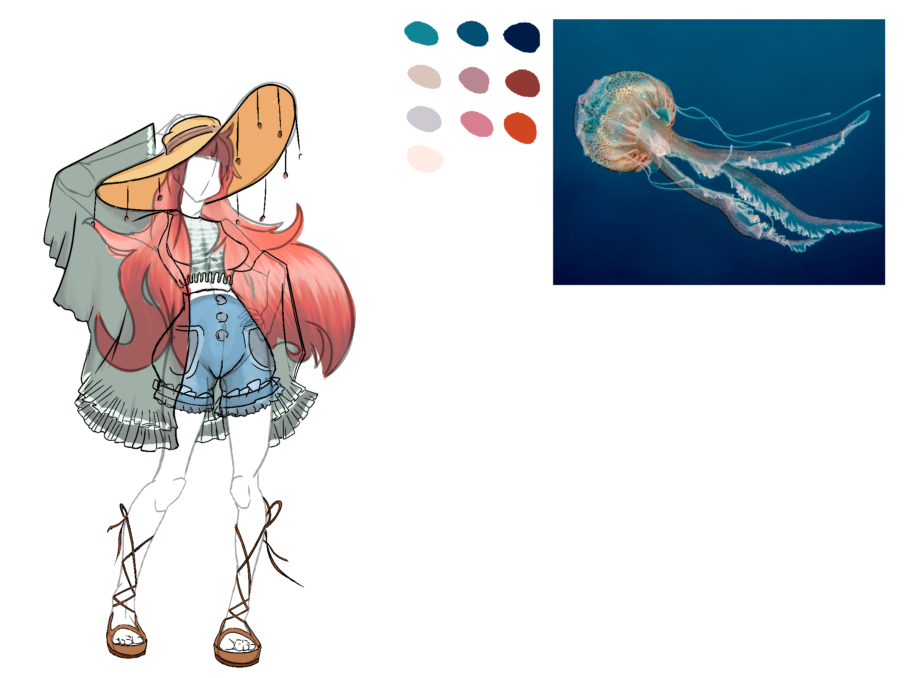
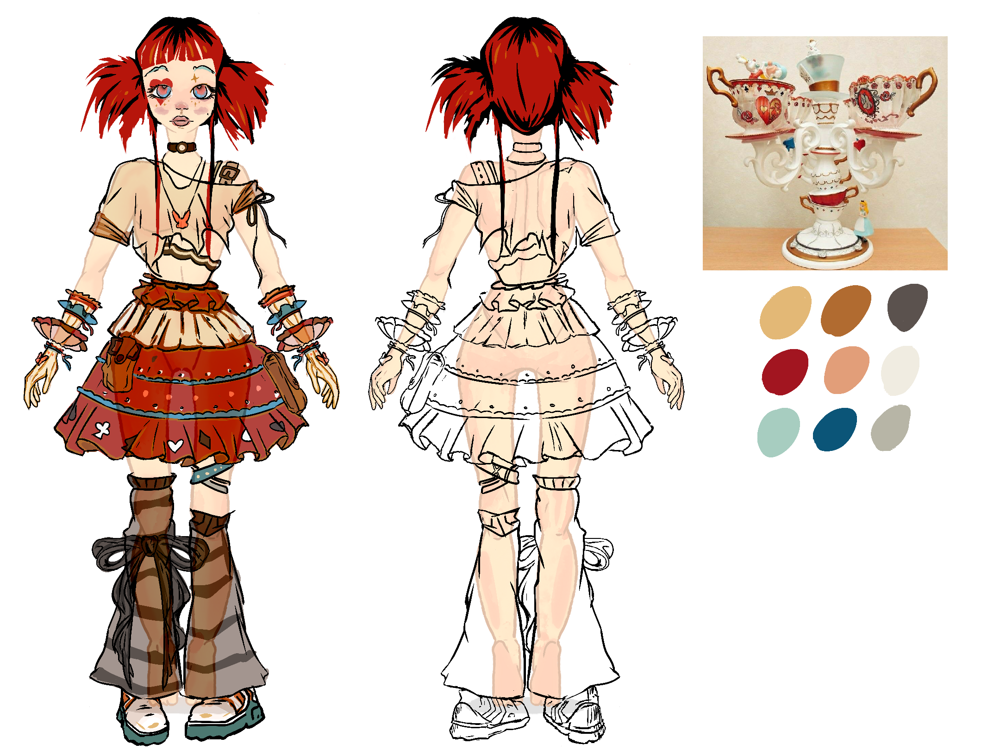
Character Design Sheet
Character Design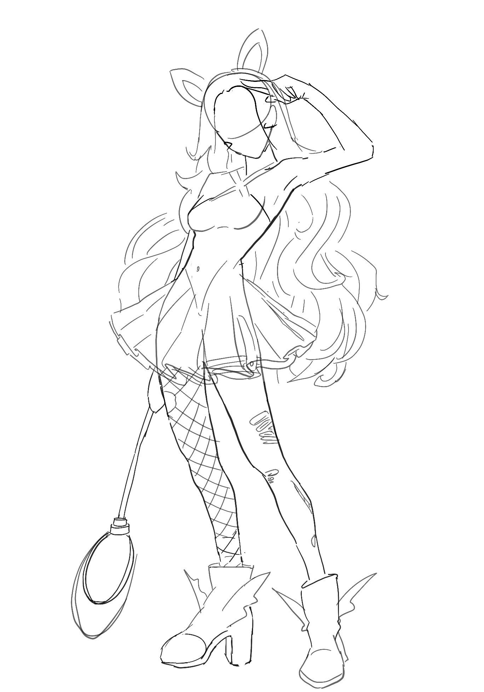
Skin & Palette Study
Character Design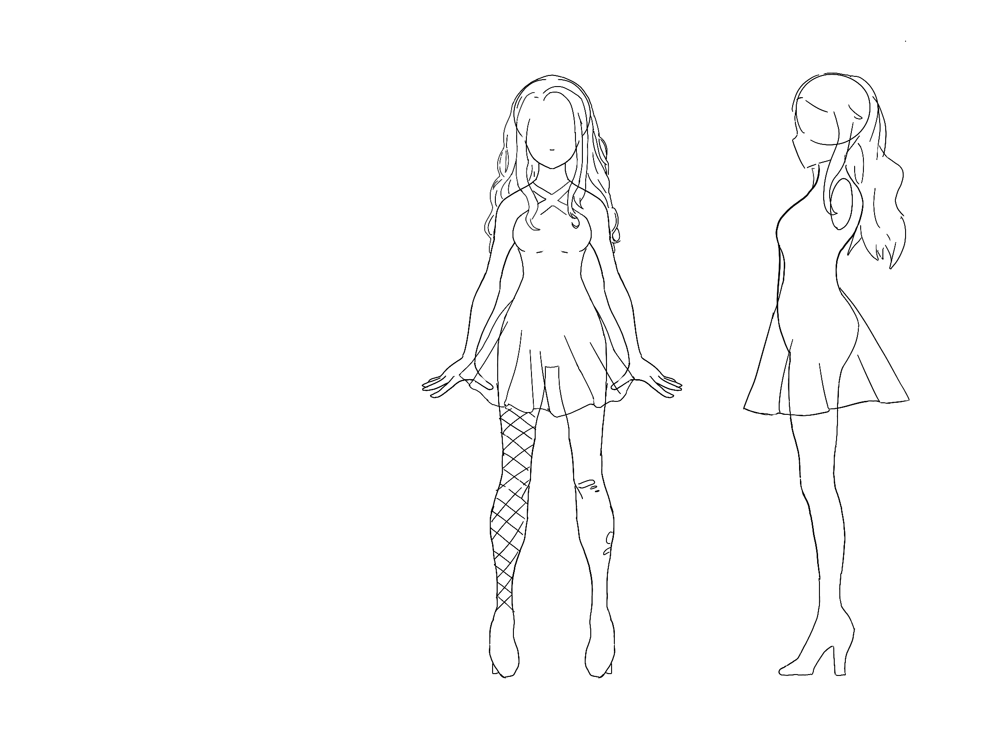
Turnaround — Side Views
Character Design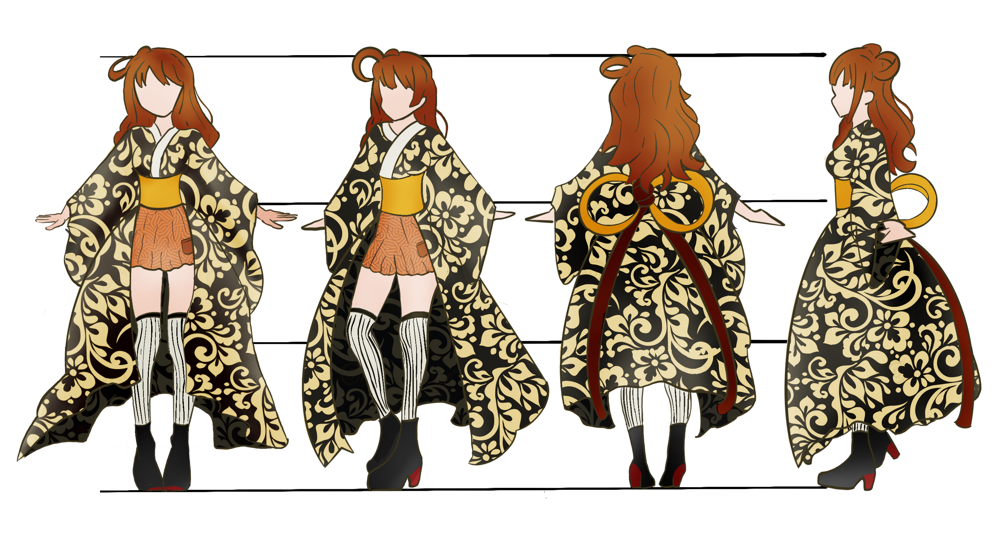
Second Character Sheet
Character Design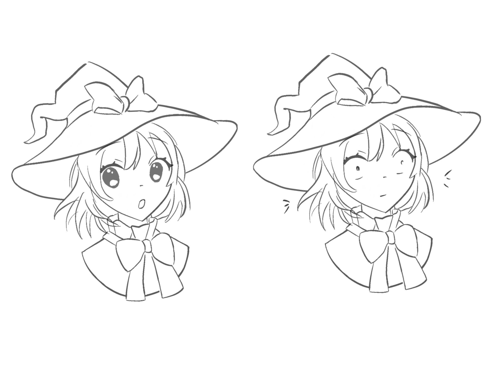
Facial Expressions
Character Design
More Face Studies
Character Design
Game Character Lineup
Game Characters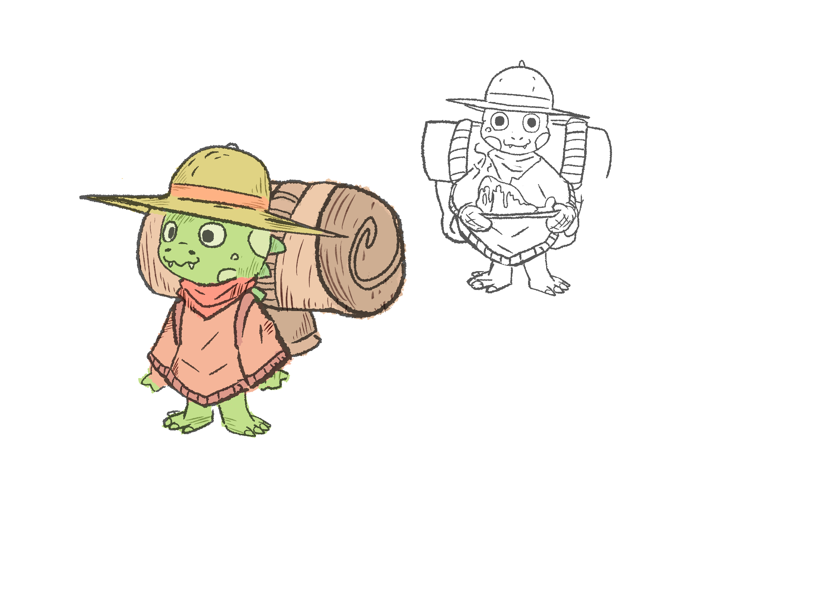
Cute Little Croco
Creature Design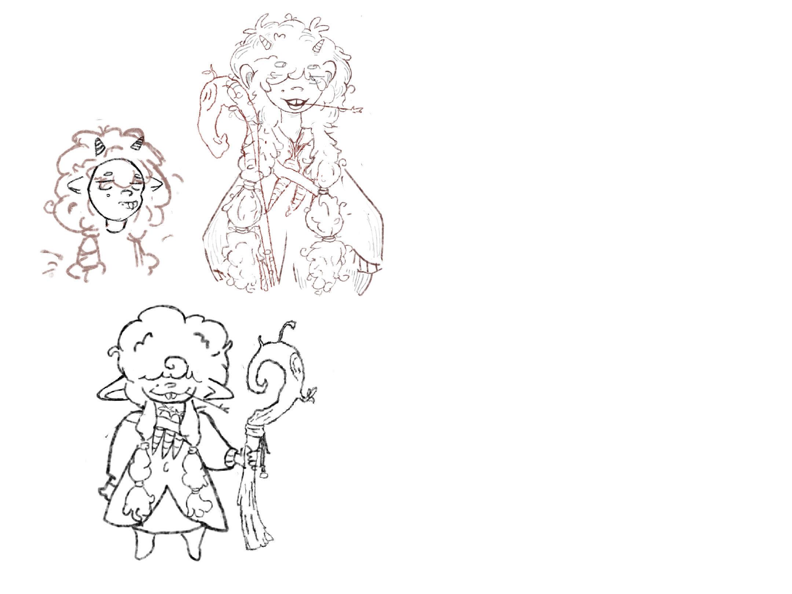
Cute Little Sheep
Creature Design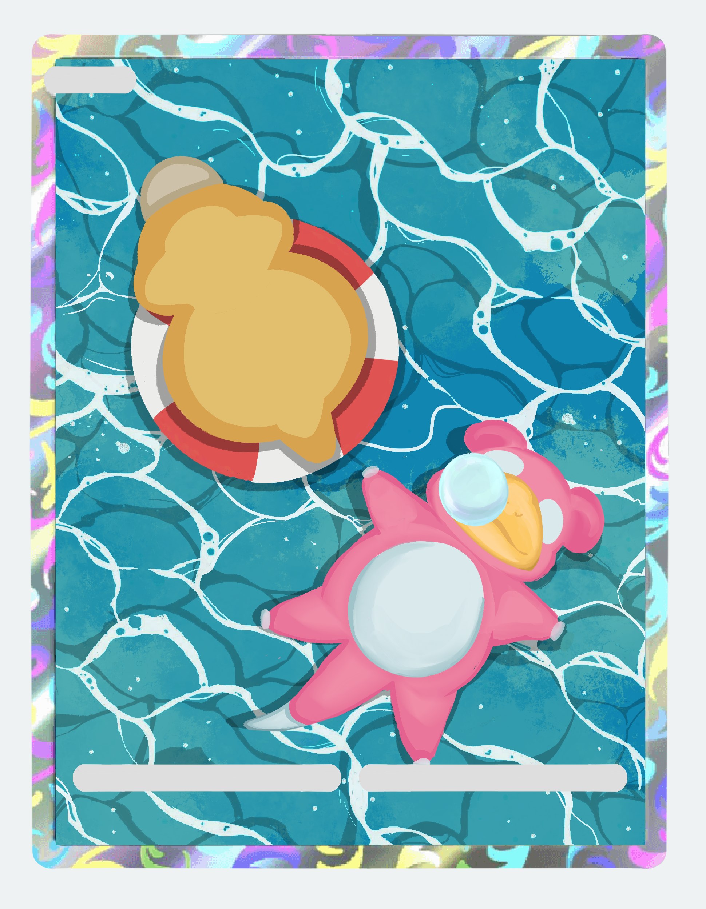
Monster Concept — WIP
Creature Design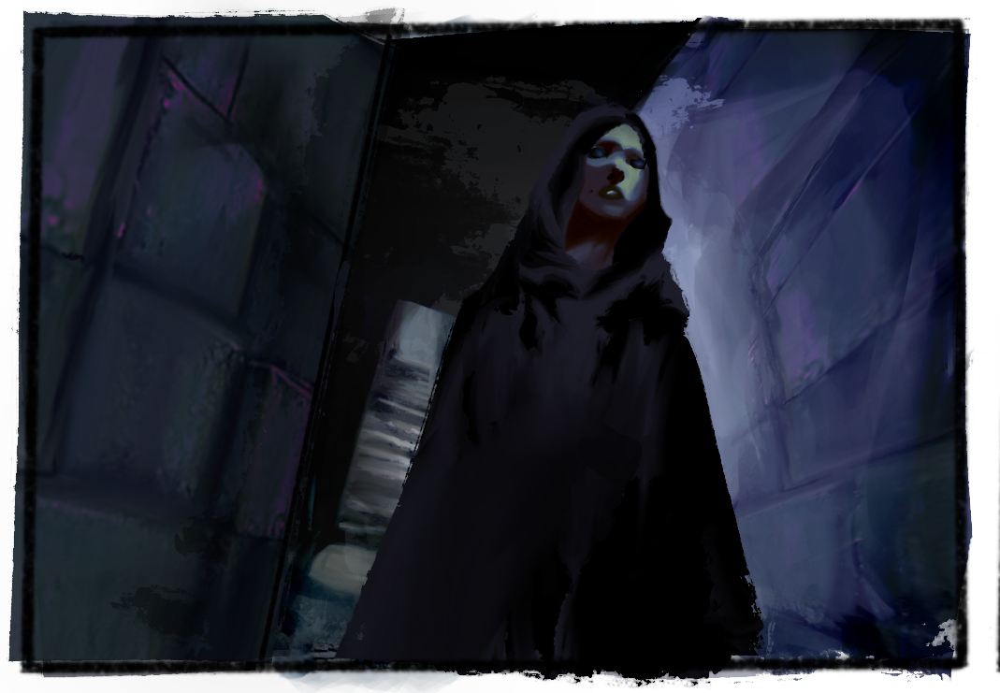
Hero Portrait Vignette
Environments & Mood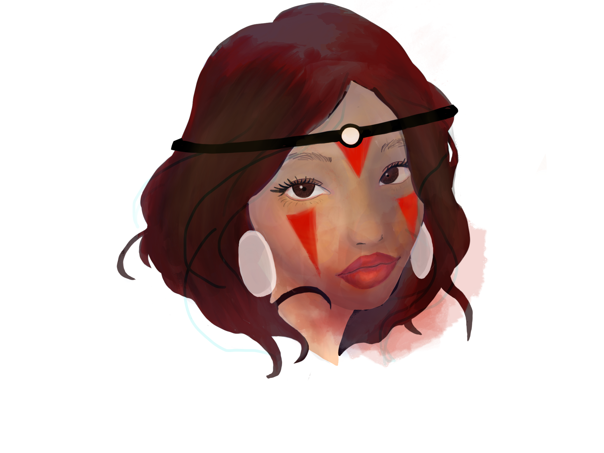